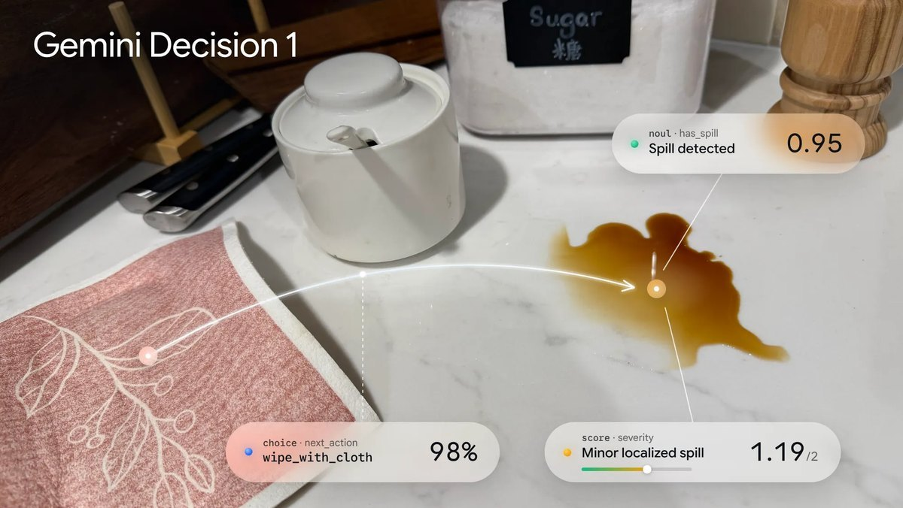
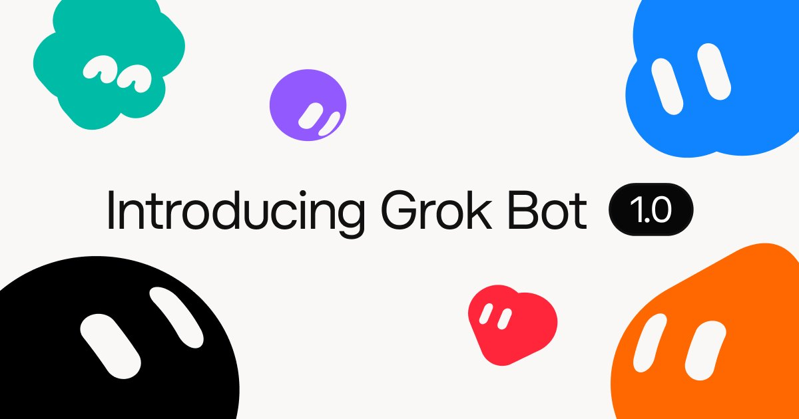
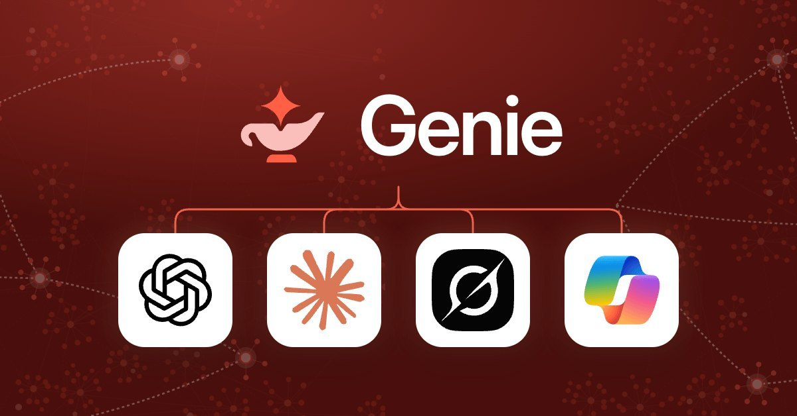
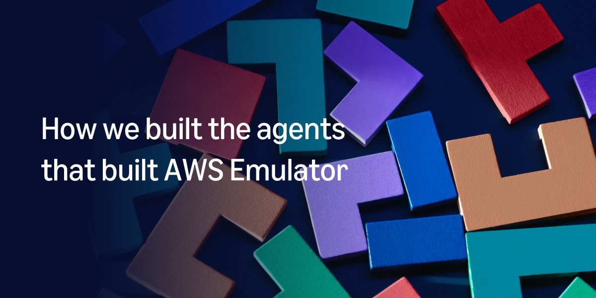

AI
Brief
Wednesday edition
Google ships a model that decides instead of writes
Also: SpaceXSI makes Grok Bot a teammate in Teams and Slack, Databricks sells business context to rival agents, AWS ships an emulator its agents wrote, and United shuts agents out of booking.
What matters today

A model that only decides
Google launches a model that scores choices instead of writing.
- Gemini Decision 1: answers up to 1,000 yes/no, choice and rubric questions about one input in a single forward pass, each with a confidence score.
- Available now in the Gemini API at $0.10 per million input tokens and nothing for output; Google's figures: 150 to 250 ms end to end. Gemini Notebook uses it to route queries.
Why it mattersRouting, tool choice and policy checks stop being a job for a chat model. They become a cheap, calibrated layer of their own, so an agent can afford many small checks on every step.

Grok Bot joins the team
SpaceXSI takes Grok Bot out of beta as a team agent.
- Available now: shared Team Bots work in Slack and in Microsoft Teams, and join video calls to answer in the chat; Team and Enterprise plans.
- Proactive: bots spot work, offer to take it, follow up and bring people in for decisions. Out of beta November 11; the company's page is dated November 2.
Why it mattersAgents are moving from one person's assistant to a shared teammate in the team's chat and meetings. Outside bots now compete inside Teams and Slack with each platform's own agent.

Context sold to every agent
Databricks turns Genie into an always-on coworker.
- Announced: Genie takes long-running jobs on a schedule or trigger, works through Genie One, email, Slack and Microsoft Teams, and asks for approval where you set it.
- Plugins: Genie plugins give ChatGPT, Claude, Copilot Cowork and Grok Bot governed business definitions; Genie Ontology is generally available.
Why it mattersThe data platform stops fighting for the chat window and sells business context to every agent instead. Whoever owns the definition of revenue becomes a supplier every assistant has to call.

Agents wrote all the code
AWS ships an emulator written entirely by agents.
- AWS Emulator: a free, open-source local copy of the AWS APIs, so tests and coding agents run without deploying; available now.
- How: three agent teams write tests against real AWS, file the failures and fix them; the team has not written or reviewed any of the code.
Why it mattersA spec plus a reference system is now enough for agents to build and maintain a product. The scarce work moves to the test suite and the gates that decide what agents may merge.
Airline shuts out agents
United bars personal AI agents from booking its flights.
- The rule: agents can still show United flights but not complete the purchase, over privacy and federal rules on what airlines must confirm with travelers.
- The reason: CEO Scott Kirby: "I don't want to create another middleman". The airline could reconsider as agents advance.
Why it mattersAgent checkout only works where merchants let agents in, and big brands are guarding the customer relationship. Personal agents will need sanctioned channels and deals, not browser automation.
Also in AI today
- VS Code 1.146: the Local agent harness is deprecated, removed February 2027, in favor of the Copilot harness; Inbox mode for agent sessions is experimental.
- Azure Content Understanding: now supports GPT-5.6, GPT-6 and GPT-6.1; Microsoft recommends GPT-6.1 Sol for standard document extraction.
- Sheets canvas: Gemini-built mini-apps can be published to their own read-only link; rolling out to Rapid Release domains.
- Google Tabletop: a Labs experiment where a group prompts an agent to build shared itineraries, polls and brackets; US waitlist.
- Gemini on CarPlay: Gemini Live comes to Apple CarPlay, with Gmail and Calendar by voice; available globally.
- JetBrains Air: ships in the 2026.3 IDEs to run and review agents such as Codex, Claude Agent and GitHub Copilot in one place.
- MCP: spec releases move to every six months; the next is targeted for March 30, 2027. A draft file-upload extension was outlined November 10.
- Qwen4-Max: preview through Alibaba's Token Plan, with a 1 million token context. Qwen Code 1.0 preview open-sources its agent harness.
- Runway Praxis-1: its 27B robotics world action model is now open weight under Apache 2.0.
- ElevenLabs: Memory and Routines are coming to its voice agents; the ElevenAI meeting notes app opens free early access; Interaction Engine previewed.
- Devin Security: Claude Mythos 5.2 is available for eligible enterprise customers; it scored 73.5 on Cognition's cyber benchmark against 32.7 for Opus 5.5.
- ChatGPT Plus for veterans: OpenAI's figures: more than 20,000 veterans and transitioning service members have claimed a free year.
- OpenAI revenue: quarterly revenue reportedly crossed $10 billion for the first time, up from $6.7 billion.
- Nvidia: the board is reportedly preparing to remove CEO Jensen Huang; shares fell about 8% after hours.
- Anthropic IPO: orders reportedly several times the shares on offer. TSMC approved up to $500 million each in Anthropic and OpenAI stock.